本篇以實戰中的心境、思考方式及局面理解為主，攻擊的部份著墨較少，留給大家自行拆解了
此次為台灣首度舉辦五子棋國際級賽事，比賽地點在捷運北投會館
左起為替補鄭志良（白雲）、替補林仕斌（阿摘）、二台林皇羽（小ｕ）、四台楊裕雄（魚丸湯）、一台我、三台陳科翰（ＫＯ１）組成中華１隊
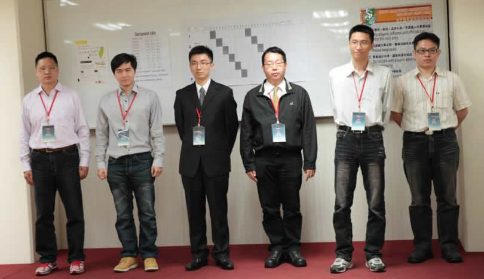
４／２８
第一輪 中華２隊 林劉民 二段
本屆台灣身為主辦國，擁有多派一隊的權利，在同國先碰的原則下，第一輪對上中華２隊，一台為正在國軍online的林劉民（９７），他在久未參賽的情況下，還能入選國手確實令人意外，第一局就抱持穩札穩打的心態上陣吧
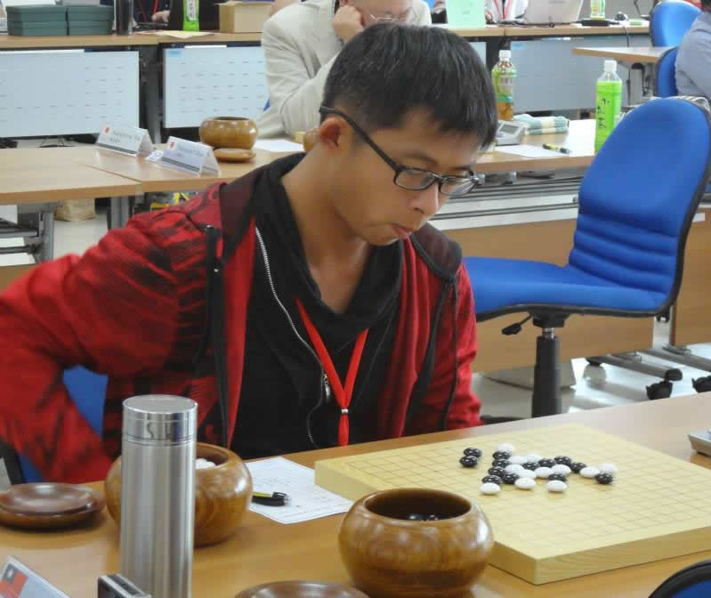
＝＝＝＝＝＝＝＝＝＝＝＝＝＝＝＝＝＝＝＝
第二輪 日本１隊 中村茂 九段
本輪對手是期待已久的中村茂，中村看起來和四年前變化不大，臉上依舊掛著靦腆又親切的笑容，由於各自身負著台灣名人及日本名人頭銜，也讓這場比賽多了一層含義
首輪的比賽日本１隊由替補上陣，本局為中村本屆世團賽第一場對局。比賽開始後，中村習慣會先思考一陣子，也讓我有機會多觀察這位一代宗師，和開賽前相較，認真思考著開局的中村，臉上多了份嚴肅，時而看著其他人的情況，時而盯著空無一物的盤面，嘴裡偶爾會發出怪聲，一付苦腦的樣子，而我腦中也不時閃過四年前對局的情況，和上次相比，自己在下棋的觀念和心態上略有長進，不過能和中村下到什麼程度自己也沒把握，只要棋局精采，輸贏倒是其次
不久中村開出花月５打，這是個黑棋蠻不錯的開局，雖然知道中村喜歡放給對手進攻，再從中尋找反擊的機會，但還是有點小意外。既然是黑優局自然沒有拿白棋的道理，便果斷選黑，前11手正常，賽前有翻了下中村近年的譜，白12是中村的慣用下法，個人感覺並非最強手段，13繼續搶外勢，14~18白棋直接動手，迫使黑棋必需做線反擊，20回防一手，黑沒攻擊勝，且白棋上方資源充足，直接回防肯定死路一條，只能利用攻擊來防守，21,23拓展空間，這裡有點擔心白棋24會擋在上方，這代表黑下方的攻擊不成功便成仁，所幸中村跟防，25,27在左上空間築出一道牆，壓迫上方白棋，29再蓋住白棋死三，欲化解上方白棋攻勢，並左下方空間取得子數上的優勢。然而在落子後才發現，黑棋並無直接攻擊勝（VCT），F13和32的位置被白棋牢牢控制著，白在右下如L7的位置似乎可以先發動攻擊，不過中村的30仍耐著性子跟防一手，31見狀立刻攻佔左下空間，除帶有攻擊手段外，並將白棋控在內側，32也只能利用攻擊破壞黑棋資源，34再回防斷開左右兩側黑棋
再次審視局面，白棋26,34,38死三動不了，黑棋雖優但仍找不到勝，決定邊攻邊消耗空間，39做四三前，40應是最佳，41,43打爛白棋左邊資源，45做三線進攻，46,48後黑仍無所獲，再將白棋可能進攻點佔掉，這時雙方時間都剩不到十分鐘，盤面也沒什麼空間，便在57手提和，中村檢視了下盤面後，雙方握手同意
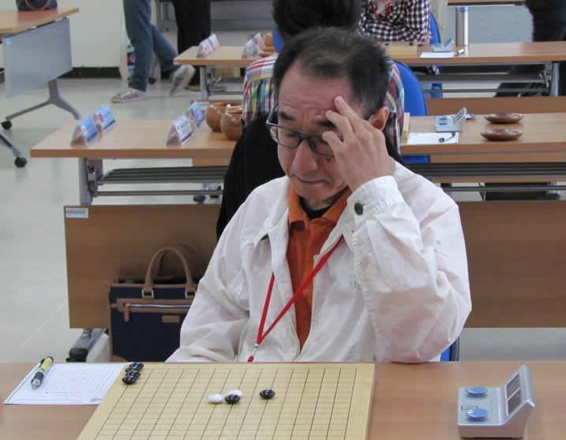
這局的情況和四年前第二局有點類似，攻了整盤後提和，不過四年前的想法是見好就收，今天則是求勝欲望強烈，不斷提醒自己穩中求勝，心態上比之前建全些，本局除了23（可能直接25好些）和29手可能有問題外，其他還算滿意，畢竟能整盤壓制一代宗師已屬難得
這輪阿摘首次國際賽出場，對上田村一誠旗開得勝，ＫＯ１請福井暢宏吃鴨蛋，小ｕ也請大角友希上賊船，對日本１隊後三台全拿，超出預期取得３.５分，加上第一輪的３分，第一天結束暫居領先地位
另外發現自己在下23手時有點心虛，做出了異常的動作（落子後假裝很有自信立刻起身去看別桌戰況），我果然不是演技派的～
＝＝＝＝＝＝＝＝＝＝＝＝＝＝＝＝＝＝＝＝
４／２９
第三輪 俄羅斯隊 Sergei Artemev 六段
根據賽前蒐集的資料，發現俄羅斯隊幾乎不碰溪峽月，早早就決定對上俄羅斯要把溪月搬出來，而前兩輪的結果也印證了俄羅斯對此開局沒什麼研究，俄羅斯坐陣一台的是Sergei Artemev，他說話的口氣平緩帶點溫吞，給人一種斯文憨厚，很好相處的感覺，直到晚會時才發現原來也是位酒國英雄
開賽後Artemev持白，在選擇打點就噴了近一小時，可見雖然過了兩輪，仍對溪月開局很佰生，最後選的這個５，依我的了解是能穩穩控制外勢的黑優變化，黑７直接在外側連接子力，白棋為了不讓黑右方外勢太厚８,10強佔外側，11衝斷白棋，13三路要點，14壓縮上方空間，15外勢要點，17活三保留左右黑棋的上方連接通路
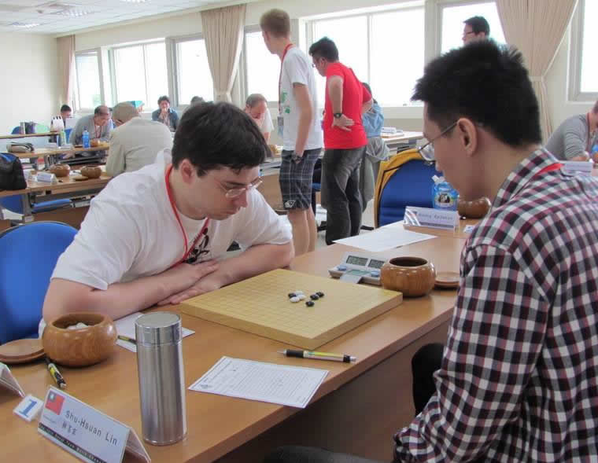
在19手後，感覺白20好像可以先在23的位置活三，當時想說主戰場在左邊，白棋好像也沒勝，所以沒先把23衝掉，回來查譜才發現曹冬是先23再19
這輪ＫＯ１輕取Roman Kryuchok，小ｕ則對上原以為會打一台的Dmitry Epifanov，小ｕ落入對方寒星四打的研究中，原以為兇多吉少，沒想到仍然保住和局，這場對局讓我重新評估寒星開局的可行性，覺得中招的風險有點大，便將寒星開局打入冷宮。對俄羅斯再獲２.５分取得對戰優勢
＝＝＝＝＝＝＝＝＝＝＝＝＝＝＝＝＝＝＝＝
第四輪 日本２隊 中山智晴 六段
在開幕晚會時，中山智晴就告訴我，將會和我正面對決，本輪果然換下原本的一台。
和中山在網路己認識多年，四年前去日本參賽時，因從未見過本人，並不知道他當時就在場邊觀戰，錯過交流的機會，今天終於有機會好好在棋盤上會會這位老友
開賽後中山立刻開出疏星一打，明顯有備而來，疏星一打是傳聞黑棋必勝的開局，但具體怎麼勝沒人知道，仍抱持黑優局沒有拿白的理由，再度選擇持黑。黑７雙方空間要點，白８,10,12分斷兩側黑棋，黑13,15,17先控制右方，19欲從下方建立左右連接，白20顯然不想讓黑棋順利的把優勢從右邊移轉到左邊空間，棋局進展到20手，中山花不到十分鐘，下得快卻顯得有點浮燥，頻頻離開位置，不知是否想掩飾內心的緊張或興奮，雖然自己有中招的感覺，畢竟盤面還不錯，仍不斷提醒自己要穩中求勝
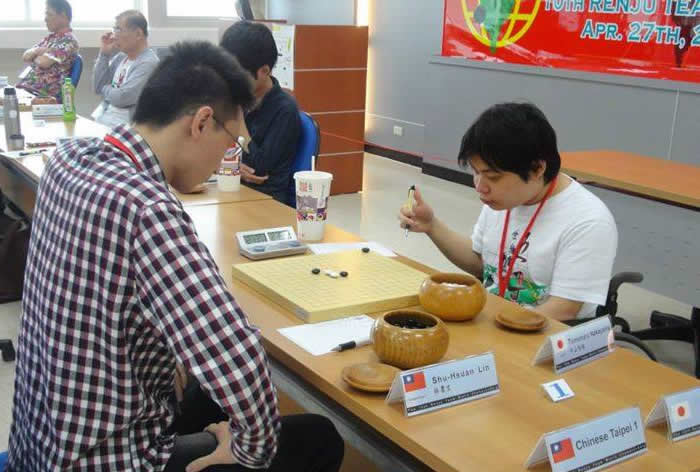
本輪魚丸湯解決石谷信一，本屆首開紀錄，ＫＯ１勝真野芳久，再下３城，第二天結束，仍然保持領先，三台ＫＯ１狀況極佳，是唯一四輪全勝的選手
＝＝＝＝＝＝＝＝＝＝＝＝＝＝＝＝＝＝＝＝
４／３０
第五輪 愛沙尼亞隊 Tunnet Taimla 八段
Tunnet身形相較四年前壯碩許多，大概是台灣天氣較為濕熱，比賽期間多是穿著輕便的T恤短褲配上夾腳拖，一整個要去海邊玩水的裝扮。雖然本屆比賽出師不利，但畢竟是現任世界冠軍，仍需小心應付。Tunnet棋風偏好進攻，攻擊非常犀利，且局面控制能力極強，若被搶到先手，將給對手帶來很大的壓力
根據賽前統計，他最近很少下花浦月，因而決定開出花月六打，Tunnet選擇持白，果然賽前多做點功課是有好處的，Tunnet花了不少時間在開局階段，這打黑５離天元較遠，白棋應以不讓黑５發揮作用為首要戰術，前幾手互龜正常，但白10倒沒看過，黑11擋住斜線，雖然並無立即攻勢，但外勢明顯較好，白若輕舉妄動，進攻失敗的後果將難以承受，12想突破封鎖，13擋斜活二的兩邊都可行，算了下13-13,14-L10,15-K10,16-J12的變化後，覺得白應該攻不出來，便選擇下擋加強下方空間，白14妥協回防，這表示黑棋得到任意佈子的機會
審視局面，黑棋大概有J5,L10,I12,H12,F9等好點，盤面空間則是左下最空曠，打定主意要集中火力在下方進攻，便想先處理一下白棋可能的反擊，白可用８,10這活二通過L10連接12影響下方，若黑15-L10,16-L9，感覺L線上的黑子被削弱，不是很滿意，先I12防止白棋跳三好像是不錯的選擇，又加強上方優勢，且白子不論防哪都沒法做出有威脅的攻擊，16防守後再下17，18應該是最佳，19逼白棋表態，看白子防哪，黑棋就往反方向攻擊，20左防後21先攻一手試試，未料22簡單防守黑便沒勝，原本預想23下在L4的位置仍有後續手段，但24-J4，黑空間剛好差一路，L線上的活三會被白子L6反三
第五輪
重新判斷局勢，右下黑攻不出來，左邊雙方外勢差不多，現在回頭還來得急，23活三，24好像只能如此，25強硬做線，並牽制住白棋14,22的活二，26也做二線從中斷開黑棋，27再防在外側，繼續爭奪左方空間的控制權，並有從下方連接的攻擊手段，28做衝四勝有點意外，似乎想解開15,11對白L10的牽制，29也選擇做衝四勝回敬，繼續投資左側
白30回防，算了下白右下硬攻好像守得住，先蓋往上方死三，防止白先手佔到I7，32白棋攻一手不吃虧，33四三前反擊，35先在上方動手，防止白棋從上方支援右下，39選擇壓縮空間的方式把右方白棋打包在角落，42再回到左邊爭奪空間，這時雙方時間都所剩不多
43當下覺得可以接受，沒想太多就下了，到49都在預期之中，50接時間，53想先壓縮空間，55壓掉白棋三路點，當時有想過要不要先把G12衝掉，但感覺57下F13還行，就沒先衝，可能是讀秒過於緊張，57完全忘了剛才的想法，下了個敗點，Tunnet當然沒放過這個機會，賞給我第一敗
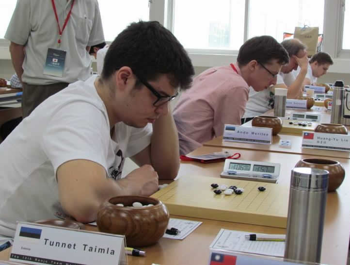
回頭再看，這局大概曝露了幾個缺點，黑一開始十幾手時的進攻應該可以再緩一些，畢竟白棋沒貨；43手先把I4及H3衝掉會好很多，不要因可接受就不去思考是否有更強的走法，由其是先衝四的走法，常會想保留資源而漏算；另外下快棋時還是很慌亂，前面時間控制好點也許可以減少下讀秒棋的機會
還好這輪隊友爭氣，阿摘戰術成功逼和Ants Soosyrv，白雲擊敗Johann Lents也取得國際賽首勝，小ｕ令人振奮的擊敗傳奇的Ando，本輪對上愛沙尼亞，我們仍以２.５分佔了上風，至此１隊全員勝場皆開張
＝＝＝＝＝＝＝＝＝＝＝＝＝＝＝＝＝＝＝＝
當天下午休息，我們帶外國選手到關渡宮走走，感受一下台灣的在地文化，再從關渡兵分兩路，一隊坐捷運，一隊騎腳踏車到前往淡水，僅管天空漂著細雨，仍澆不息大家的熱情，二十幾位熱血棋手，穿著雨衣浩浩蕩蕩的往淡水出發，延路風光明媚，自行車道上幾乎沒有其他遊客，莫約三四十分鐘抵達目的地。預計一行人到淡水老街逛逛，順便解決晚餐，沒想到俄羅斯人果真戰鬥民族，居然想再騎車殺回關渡，那我們也只好捨命陪君子，我和ＫＯ１告別了近在眼前的食物，同Epifanov、Nikonov及Chingin共五人，再度跨上腳踏車，也幸好當天下著小雨，微涼的天氣非常適合騎車，回程時和在中國工作的Chingin聊了一段路，他的中文己有小三的程度，溝通不是問題，也算是有幫政府做做國民外交～～
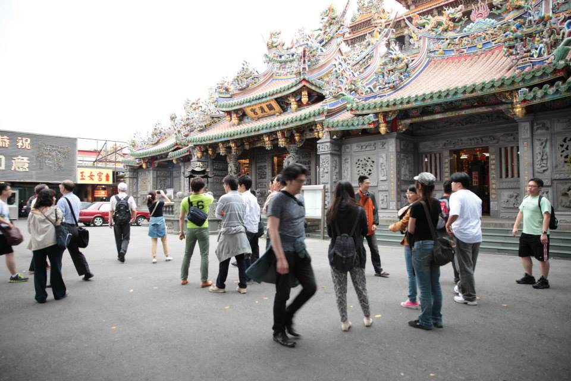
＝＝＝＝＝＝＝＝＝＝＝＝＝＝＝＝＝＝＝＝
５／１
第六輪 中華２隊 簡詠璇 三段
第二輪循環開始，再次碰到中華２隊，這回上陣的是特地回國參賽的簡詠璇（蘭妮），我印象中蘭妮的棋風是非常好攻的，還是一樣穩札穩打的策略應戰，蘭妮開出疏星一打，我心想是否看過我和中山那局而有特別準備，不過一樣沒拿白的理由，先想好等等怎麼變招，持黑迎戰
前11手和中山那局相同，原本計畫15要走另一套攻法，未料蘭妮12率先變招，局面看起來黑棋應往左邊攻擊，第一感是黑13-F8,14擋中間,15-E7,16下擋,17-F7做小三角，但白14,16可以擋在J8或H10，現在黑棋也沒什麼外勢，若去防守白棋，局面容易被中和，如此黑棋優勢便蕩然無存，考慮過後還是決定硬上
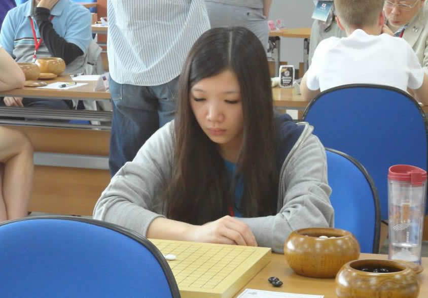
盤中有看到白48下D15可勝，應該也還有其他勝法吧，回來查一下譜，到21手還沒問題，23要下32的位置，不過黑之後的勝法也很複雜，也因為這局下了五個多小時，迅速吃完午餐，立刻進入下一輪
＝＝＝＝＝＝＝＝＝＝＝＝＝＝＝＝＝＝＝＝
第七輪 日本１隊 中村茂 九段
日本１隊仍由中村茂出戰，決定繼續花月六打拼中盤，中村持白，白６為這屆比賽最常出現的６，黑７正常，但白８選擇了一個早期的下法，而這個８去年底已被中國研究出必敗，白10是這變化其中一個困難的分支，推測是昨天日本２對上俄羅斯，其中神谷俊介被Nikonov Konstantin用這招打爆，所以今天中村現學現賣。而我對這變化的勝法略知一二，進行至21手幾乎未花到思考時間，但如此直接進攻的下法也斷了自己後路，22後白棋下方絕對優勢，也意謂這局棋勢必會分出個高下，我對這譜的印象也僅止於此，便當做解詰棋，開始長考找殺
第七輪
在儘量保留所有可用資源，終於發現必勝的手順，照慣例，先看看其他人的情況，讓自己冷靜一下，回到座位確認再三後，亮出寶劍。拍出23,25，中村果然非等閒之輩，24,26立刻做出最頑強的抵抗，因保留了19,5,21這個死三，27後白棋只剩28不會簡單敗，黑棋便從夾縫中向下竄出一條生路
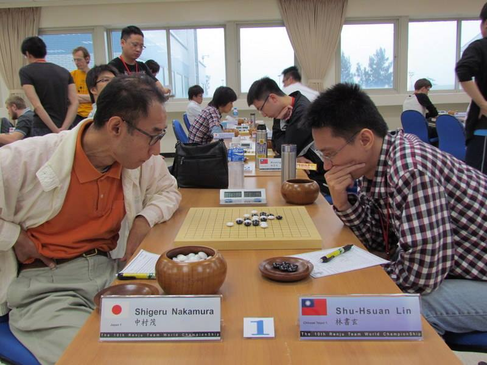
贏下這一盤，算是一圓下棋十幾年來的夢想，可以說是此生無憾了，但印象最深的，是賽後中村默默離開的背影
這輪小ｕ再次收拾世界第二的大角友希，ＫＯ１與福田暢宏打平，取得２.５分，拉開與日本１的差距，加上第六輪的３.５分，能影響我們爭冠的，只剩愛沙尼亞隊
＝＝＝＝＝＝＝＝＝＝＝＝＝＝＝＝＝＝＝＝
５／２
第八輪 俄羅斯隊 Sergei Artemev 六段
本輪俄羅斯也未換將，同樣是Artemev，一上來便開出金星三打，求和意圖明顯，為避開和棋大定石，開始思索各種變招，最終決定持黑，黑５打Ｘ轉成花月變化，Artemev似乎對這變化也不熟悉，白10第一次看到，11開始想控制全盤空間，12超級保守的塞中間
第八輪
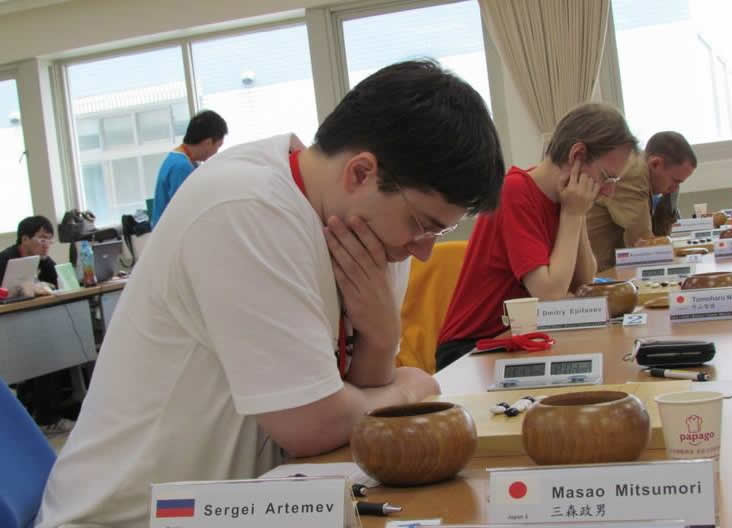
本輪小ｕ又在巨大的時間壓力下保住和局，及魚丸湯水月開局出奇致勝，對俄羅斯再下２.５分
＝＝＝＝＝＝＝＝＝＝＝＝＝＝＝＝＝＝＝＝
第九輪 日本２隊 神谷俊介 三段
倒數第二輪，日本２隊再度換上另一位替補神谷俊介，雖不知他棋力如何，但在第四輪曾砍了小ｕ一局，絕不能掉以輕心，於是再度搬出花月六打，神谷一樣選擇持白，並下出這屆比賽很受歡迎的白６,８變化，我相信神谷對這個一定有研究，這幾天也觀察到他非常捨得在開局投入大量時間，便決定下個少見的９，讓他先噴一小時，這個９以前有小研一下印象還可以，果真約一小時後，神谷才下出白10，不過這時換我頭大了，一直找不到好的後續
第九輪
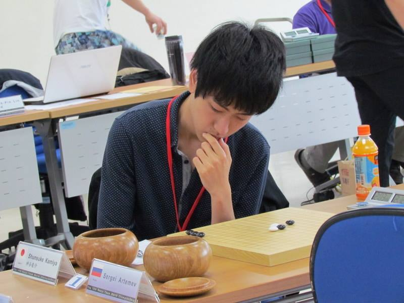
這輪ＫＯ１速勝真野芳久，與日本２戰成平手，為本賽事首度未能取得對戰優勢，反觀愛沙尼亞今天又大爆發，連續二天轟出滿貫全壘打，九輪結束後，雖仍保有領先，但差距大幅縮小到只剩０.５分，最後一輪打平就能奪冠。或許是大家感受到愛沙尼亞緊追不捨壓力，今晚的氛圍稍嫌凝重
＝＝＝＝＝＝＝＝＝＝＝＝＝＝＝＝＝＝＝＝
５／３
第十輪 愛沙尼亞隊 Tunnet Taimla 八段
最後關頭，不用說也知道這輪一定是Tunnet Taimla上場，賽前有點事耽擱，遲到了幾分鐘，簡單握手致意後，Tunnet開出峽月七打，這開局個人認為黑還是好下，自然選黑，但我想避開對手可能的準備變化，第七打轉成雲月四打的棋型，Tunnet也很捧場，就選了這點，旁邊三台ＫＯ１對Ants剛好就是開雲月四打，所以兩桌前七子棋型相同，白８就分道揚鑣，各檔在黑活二的兩端
覺得這白８黑白可下，９~12互龜，13跳蓋死三搶空間，14,15再龜，16做強下方牽制黑棋進攻，17算了很久，只能塞中間的樣子，白下方沒勝，18反過來蓋住黑棋，19顧忌白棋下方厚勢，只能先在上方做出點威脅，若下在其他地方被白防住，中後盤就等著看白棋表演，沒想到白棋20,22直接動手，23,24唯一，25想先活個三加強上方，26好像也只能下擋，27再回防一手，28,30是可預期的手段，31好像可防G13，但實戰不敢放右邊給白棋攻，選擇較穩健的下法，目前盤勢白棋上下都留有餘味，局面不利下，己有求和打算
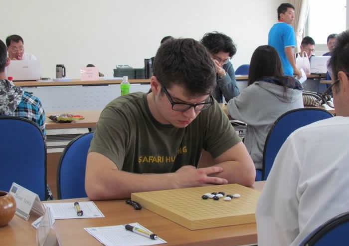
白雲很可惜的在局面優勢下輸給了Ando，ＫＯ１戰勝台灣人從未贏過的Ants，最後一盤小ｕ與Martin打和，也確定愛沙尼亞以０.５分之差逆轉奪冠，中華１隊拿下亞軍，雖然和期待有落差，心理難免失望，但仍改寫史上最佳成績
＝＝＝＝＝＝＝＝＝＝＝＝＝＝＝＝＝＝＝＝
對自己這次比賽的表現還算滿意，不論是在成績或棋局的品質上，都比上次要來得好，當然絕對也還有進步空間，有趣的是本次比賽十盤棋全部拿黑棋，加上之前名人挑戰賽的五局，近十五局全都持黑，莫非我有持黑偏好？
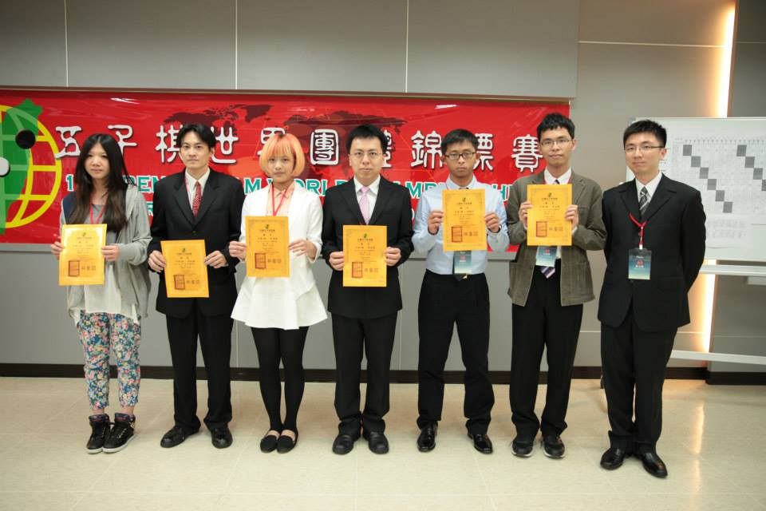
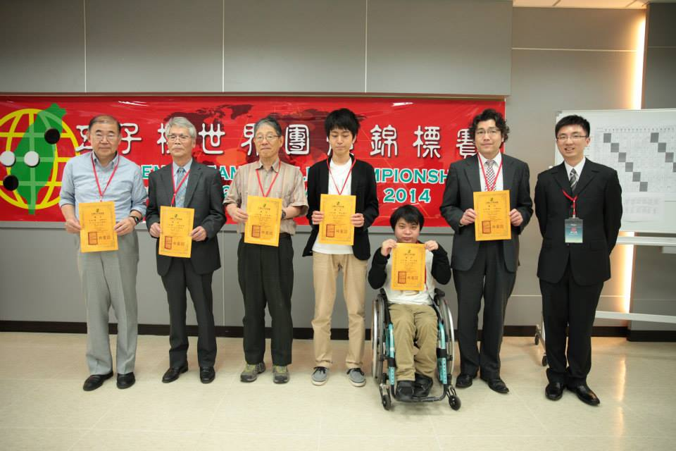
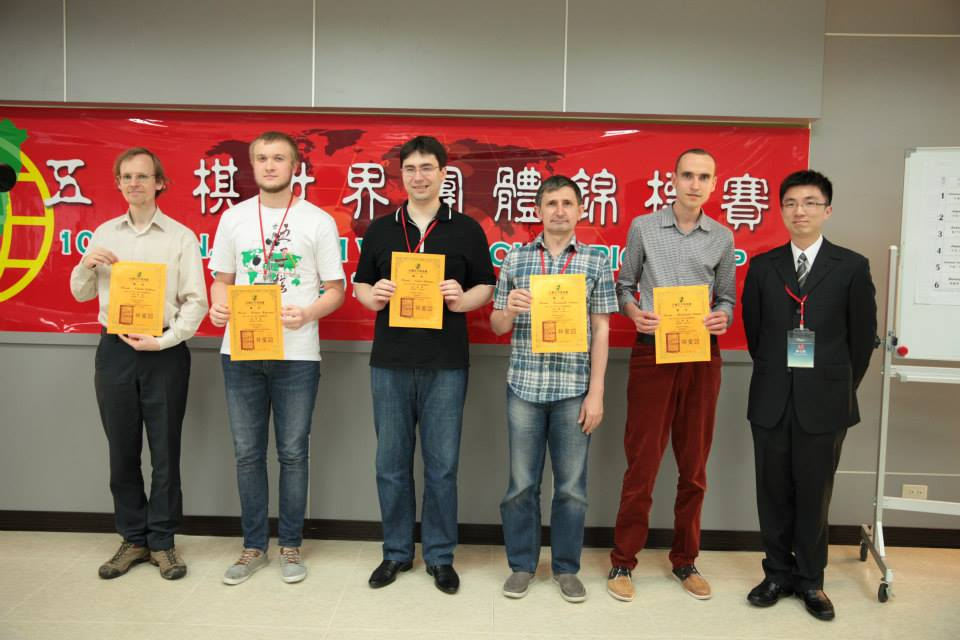
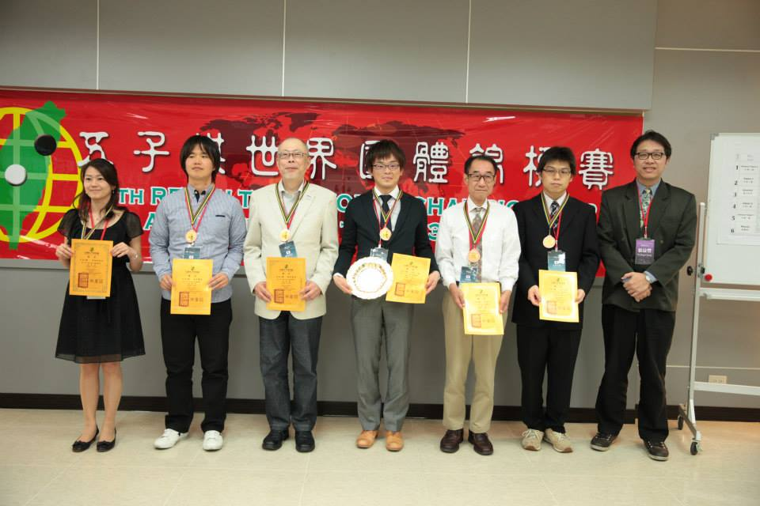
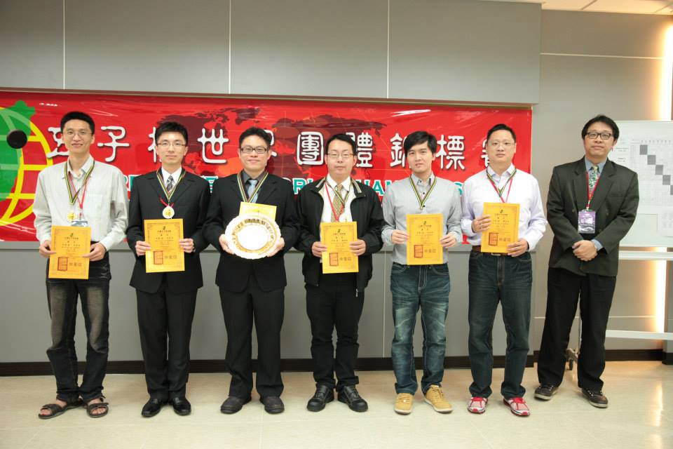
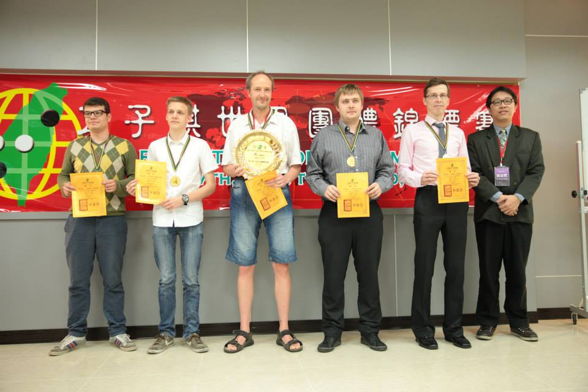
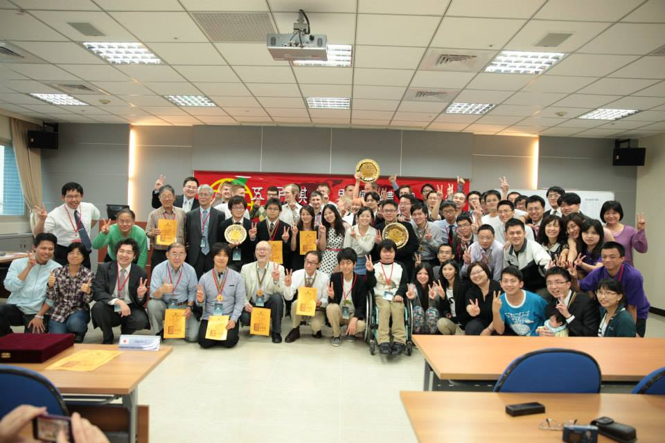
頒獎後的晚宴，各國拋開棋盤上競爭對手的身份，忘情的閒聊、拍照、要簽名、灌酒...等，當然，仍不忘拿出棋盤研個兩局，會後續攤到各房間串門子，一群人和Tunnet檢討對局交流變化、跟Artemev聯棋、與中村一票日本人ＰＫ伏地挺身（中華民國國軍９７立馬宣揚國威），玩得十分盡興，直至體力耗盡方休
＝＝＝＝＝＝＝＝＝＝＝＝＝＝＝＝＝＝＝＝
這次能拿到亞軍其實並不意外，我確信台灣絕對有爭冠實力，比較意外的是前八輪能獨自領先，而能有這個成績，除了感謝１２隊所有隊友努力外，要特別感謝總教練小猴，每晚招集大家開會，分析檢討戰情，擬定作戰計畫，真的有穩定軍心，凝聚共識的作用。另外負責統籌比賽的晨霧也功不可沒，以及許多好久不見的棋友們大力相挺，包辦所有大大小小雜七雜八的比賽事務，讓選手能無後顧之憂的全力投入比賽，許多外國人也說，這是他們參加過最棒的比賽，己經預約下次台灣再辦比賽一定參加，只不過，下次，我們一定將冠軍盃留下
＝＝＝＝＝＝＝＝＝＝＝＝＝＝＝＝＝＝＝＝
魚丸湯賽後雜感
小ｋ如夢似幻-我在世團的一週